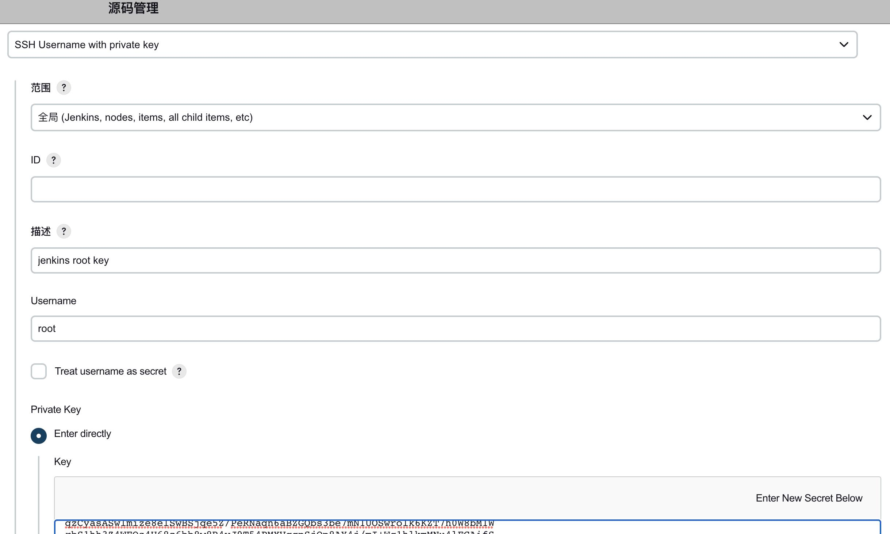
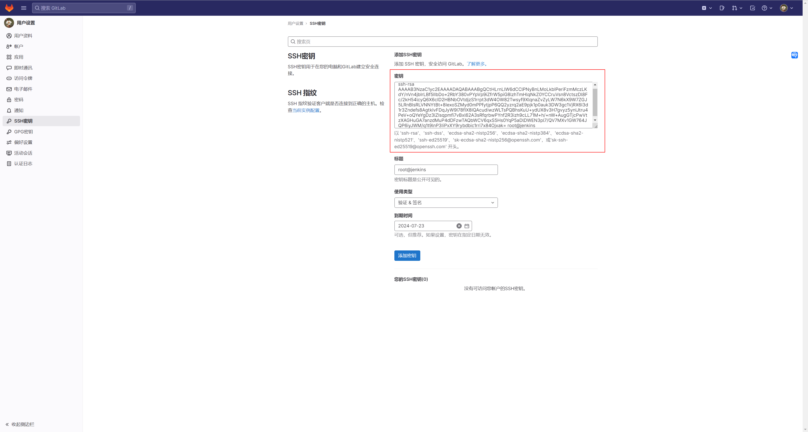
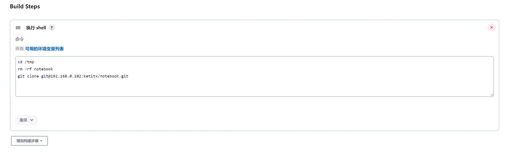

Jenkins 自动clone代码
- 创建job
- 构建一个自由风格的软件项目--> magedu-app1-deploy-test1
- 将jenkins启动用户的私钥到 jenkins
- 将jenkins启动用户的公钥添加至 gitlab
- 验证job构建
- 验证数据：
- root@jenkins:~# ls /var/lib/jenkins/workspace/magedu-app1-deploy-test1
- index.html

root@jenkins:~# ssh-keygen
Generating public/private rsa key pair.
Enter file in which to save the key (/root/.ssh/id_rsa):
Enter passphrase (empty for no passphrase):
Enter same passphrase again:
Your identification has been saved in /root/.ssh/id_rsa
Your public key has been saved in /root/.ssh/id_rsa.pub
The key fingerprint is:
SHA256:ACwzun4zeyykMx37JL1zMfENUF74Faxv+QR/TI88v4o root@jenkins
The key's randomart image is:
+---[RSA 3072]----+
| .. ....... |
| + .. .... o |
| . + . ... o |
|. o . o . .|
| . S o ..++.|
|. o. o . . ++o+|
|. +.+o o . oo.|
| = Bo+.. . ..|
| +.Boo E ....|
+----[SHA256]-----+
root@jenkins:~#
把公钥放到gitlab
root@jenkins:~# ssh-copy-id 192.168.0.102
/usr/bin/ssh-copy-id: INFO: Source of key(s) to be installed: "/root/.ssh/id_rsa.pub"
The authenticity of host '192.168.0.102 (192.168.0.102)' can't be established.
ED25519 key fingerprint is SHA256:GGxDETDuqIohTzJGHnpBVFmja4MgbnEcDfh1IKpxMtw.
This key is not known by any other names
Are you sure you want to continue connecting (yes/no/[fingerprint])? yes
/usr/bin/ssh-copy-id: INFO: attempting to log in with the new key(s), to filter out any that are already installed
/usr/bin/ssh-copy-id: INFO: 1 key(s) remain to be installed -- if you are prompted now it is to install the new keys
root@192.168.0.102's password:
Permission denied, please try again.
root@192.168.0.102's password:
root@jenkins:~# ssh-copy-id 192.168.0.102
/usr/bin/ssh-copy-id: INFO: Source of key(s) to be installed: "/root/.ssh/id_rsa.pub"
/usr/bin/ssh-copy-id: INFO: attempting to log in with the new key(s), to filter out any that are already installed
/usr/bin/ssh-copy-id: INFO: 1 key(s) remain to be installed -- if you are prompted now it is to install the new keys
root@192.168.0.102's password:
Number of key(s) added: 1
Now try logging into the machine, with: "ssh '192.168.0.102'"
and check to make sure that only the key(s) you wanted were added.
root@jenkins:~#
此时可以直接免密登录gitlab 的服务器
查看id_rsa.pub ，放到gitlab
root@jenkins:~# cat /root/.ssh/id_rsa.pub
ssh-rsa AAAAB3NzaC1yc2EAAAADAQABAAABgQCtHLrnLlW6dCClPNyBnLMoLkbIPeriFzmMczLKdY/nVn4jbIrLBf5IIbDo+2RbY380vPYpVp9iZfrW5piG8lzhTmHlqNkZ0YCCruVsn8VctszDl8Fc/2kH54lcyQ6X6cID2HBNbOVtdjzS1rrpt3dW4OW82Twsyf9XlqnaZvZyLW7N6kX9W7ZGJ5LRnBIsRLVNNYtBt+8IexoSZMyd0mPPfytjpP6QQ2yzrq2aE9pjk1p0auk3DW3gc1VjRX6I3d1r3Zndefs8AgtkIvFDqJyW9I78fIX8IQAcudiwzWLTsPQBhsKuU+ydUX8v3H7gvyz5ynlJtru4PeV+oQYeYgDz3lZIsqpmfi7vBxl62A3sRfqrbwPYnf2R3izh9cLL71M+h/+nW+AugGTjcPwVtzXAGHuGA7anzdMuP4dDFzwTAQbWCV6qxS5Hs0YqP5aDlDWEN3pl7/QV7MXv1GW764JQP6iyJWM/q1t9lnP3IiPxXY9rybdbic1rri7x84Ojxak= root@jenkins
root@jenkins:~#

测试
clone 的时候要使用 git 协议
